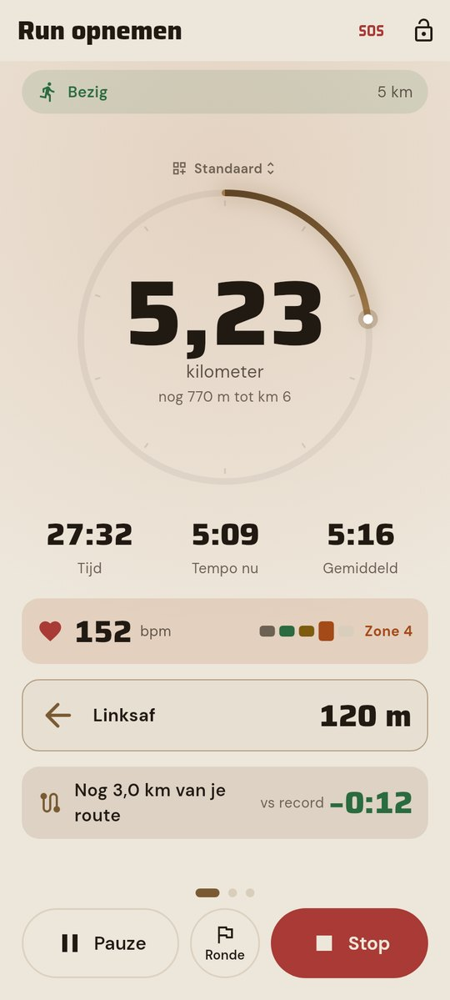
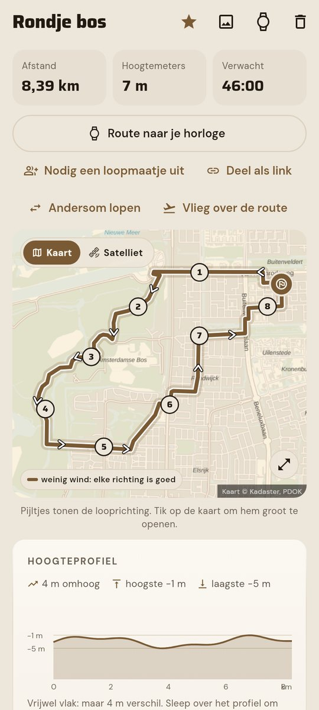
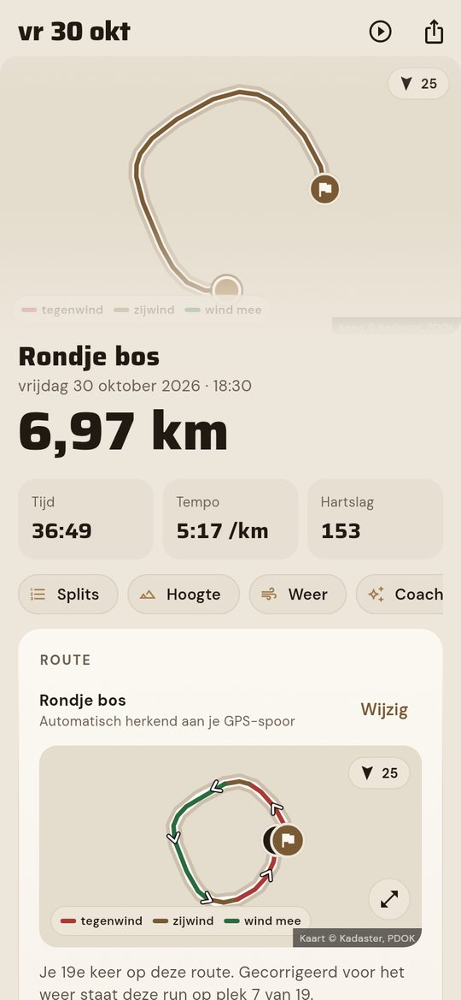
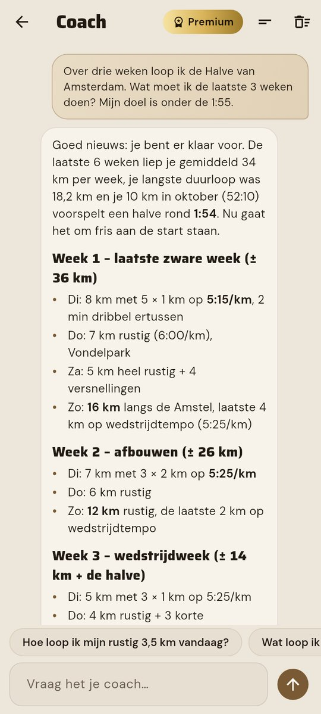
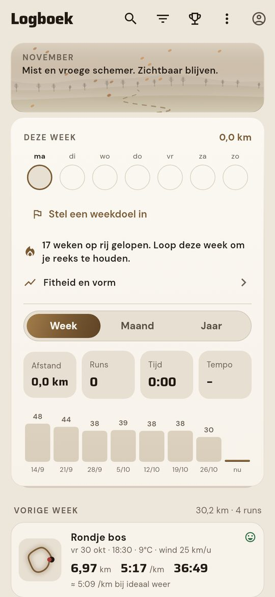
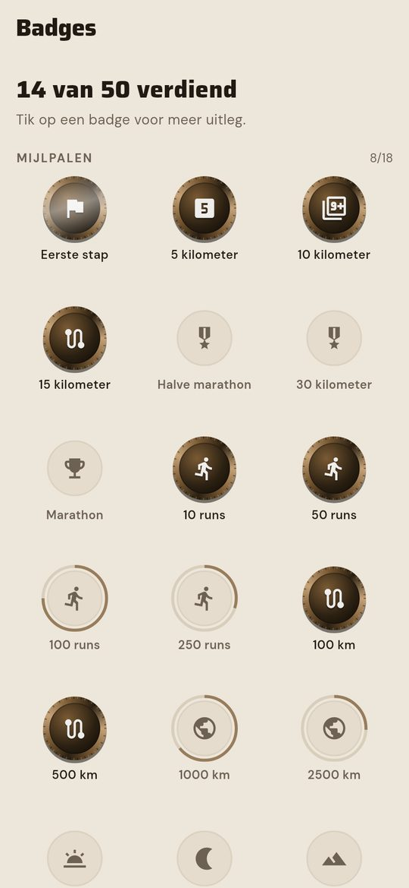
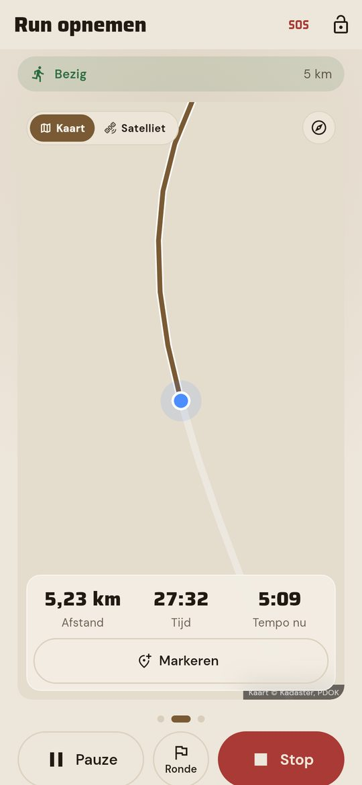
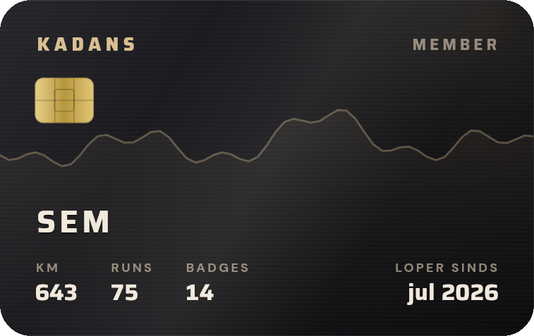

01.
Koppel je runs
Via je horloge (Garmin, Samsung, Fitbit en meer via Health Connect), Strava, een GPX-bestand of met je telefoon.
Kadans rekent per 5 minuten uit wanneer jij moet vertrekken: het weer, de wind op je route, de buien en je eigen runs.
De meeste loop-apps vertellen je achteraf hoe het ging. Kadans helpt je vooraf. Je koppelt je runs, kiest je rondje en Kadans rekent het weer van de komende uren door, met de wind per kilometer en de buien van de komende twee uur. Hoe meer je loopt, hoe beter Kadans weet bij welk weer jij het snelst bent.
Bekijk de appEen voorbeelddag in november, voor een rondje van 8,5 km. Elke streep is 5 minuten. Goud is top.
Droog en weinig wind. Dit is je moment.
Om 7:10 droog, windstil en negen graden. Precies dan.Zo klinkt Kadans op een gewone dinsdag
Via je horloge (Garmin, Samsung, Fitbit en meer via Health Connect), Strava, een GPX-bestand of met je telefoon.
Rustig, tempo, lang of herstel, op je eigen rondje. Kadans weet waar de wind vandaan komt.
Per 5 minuten berekend, met de buien en de wind op je route erbij. Minder gokken met het weer.
Echte schermen uit Kadans. Veeg erdoorheen of gebruik de pijltjes.







Op Vandaag zie je in één oogopslag je beste vertrektijd, met een score, het weer en wanneer het droog wordt. Kies je rondje en Kadans zegt welke kant je op moet, zodat je op het eind rugwind hebt.
Tijdens je run praat een Nederlandse coachstem mee: Daan, Bram, Emma of Fleur. Met tussentijden, een tempo-alarm en een feestje als je een record loopt.
Premium voegt een AI-coach toe die je runs, je wedstrijd en het weer van de komende dagen kent. Vraag gewoon wat je deze week moet lopen.
Updates over de app en de lancering. Volg ook @kadans.app.
Op 1 december gaat Kadans live voor Android. Wie op de wachtlijst staat, hoort het als eerste en kan al eerder meetesten.
Twee mannen- en twee vrouwenstemmen, met een voorbeeld om te luisteren.
Plan een groepsrun en zie meteen wie er meeloopt.
Kortere link, dezelfde Kadans.
Kadans kent je eigen rondjes en zoekt per route het rustigste moment: minder wind, droog, en de wind op het eind in je rug.

In je profiel staat je ledenkaart, in zwart en goud. De lijn is het profiel van je lopen; kilometers, runs en badges tellen vanzelf mee.
Begin zonder abonnement. Premium is er voor wie meer wil.
Prijs omhoog? Dan hoor je het ruim van tevoren. Je runs exporteren kan altijd.
Eerste maand gratis, daarna automatisch verlengd. Opzeggen kan altijd in Google Play.
Gebruik Strava gerust voor je vrienden en ranglijsten. Strava laat zien wat je liep; Kadans helpt je vóór je run. Ze werken mooi samen.
Nee. Je kunt runs ook met je telefoon opnemen, met de hand invoeren of een GPX-bestand uploaden. Met een horloge gaat het vanzelf.
Kadans komt eerst voor Android. iPhone volgt later.
Alleen jij ziet je runs. We verkopen niets en tonen geen advertenties. Je kunt alles inzien en je account verwijderen via je profiel. Lees de privacyverklaring.